知道你的四轴里面每个小东东都是干嘛用的吗？
麻雀虽小，五脏得全。简单说，飞控就是大脑，它能知道每一时刻无人机的状态，并且给下一时刻需要作出的动作发出指令。
电调就好比是神经单元，接收大脑发送的命令，转化为相应的执行命令给各个肌肉，让肌肉执行相应动作。
而电机就是肌肉，它接收电调的指令，驱动手脚动起来。
那手脚是什么？当然是四个螺旋桨了。螺旋桨在肌肉（电机）的带动下快速旋转，带动飞机做出不同的动作。
除此之外还需要一个小心脏，电池就是心脏，源源不断的给无人机提供能量。
这些还不够，一个很坚硬，韧性很好的骨骼（机架）也很重要，没有骨骼，再猛的电机没法让四轴飞起来。
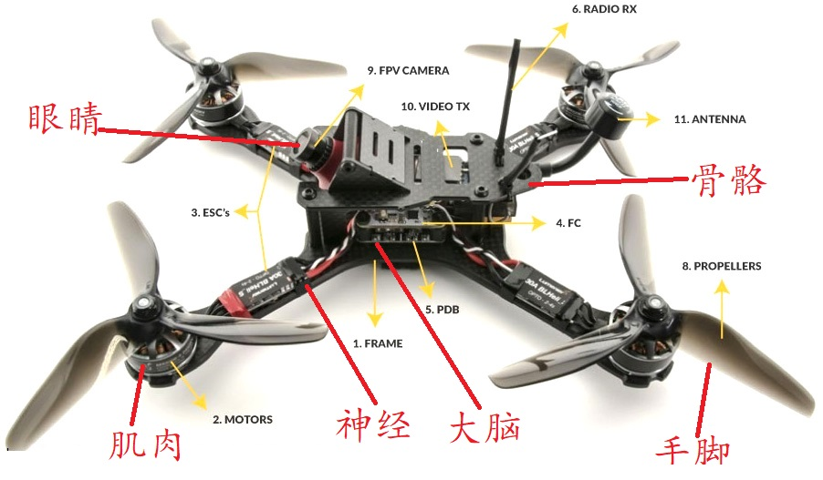
飞控
四轴飞行器相对于常规航模来说，最最复杂的就是电子部分了。
四轴之所以能飞行得很稳定，全靠电子控制部分对四轴飞行状态进行快速调整 。
由于四轴飞行器机械机构的限制，它的飞控都自带惯性导航模块(简称IMU，3轴陀螺仪以及3轴加速度传感器)，没有这个惯性导航系统，四轴根本无法飞行，更谈不上飞稳了。飞行中的姿态感测全靠这个IMU了，可见它是整架无人机的核心部件 。
飞控需要相当复杂的算法支撑，算法通过传感器的数据，结合飞手的遥控指令，给整个四轴下达动作指令。
现在有很多成熟的开源飞控，大家都可以自由做选择。像用的最多的APM，以及它的继承者PX4，更有适合迷你四轴的betaflight等等。
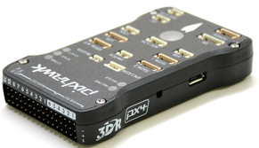 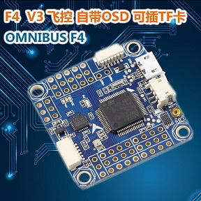
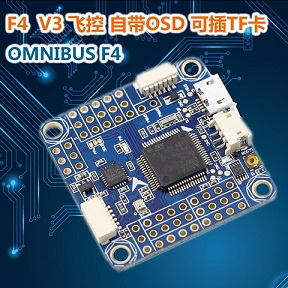
电调
电调就是四轴电机的驱动。它的作用就是将飞控板的控制信号，转变为电流的大小，以控制电机的转速。
不象直机的桨，只有一个能产生集中的离心力形成陀螺性质的惯性离心力，保持机身不容易很快的侧翻掉，所以通常用到的舵机控制信号更新频率可以很低。而四轴飞行器四个桨转动时的离心力是分散的，需要高反应速度的电调，以应对姿态变化引起的飘移。
四轴的电调是专用的高速电调，能够快速反应到电机的转速变化。用IIC总线接口传送控制信号，可达到每秒几百上千次的电机转速变化，在飞行时姿态能够时刻保持稳定，即使受到外力突然冲击，依旧安然无恙。
四轴电调以电流为主要参数，一般会表明多少A, 如20A、30A等。大电流的电调可以驱动小电流的电机，而小电流电调不能超标使用。
电调发热量很大，一般放到浆下面，方便散热。
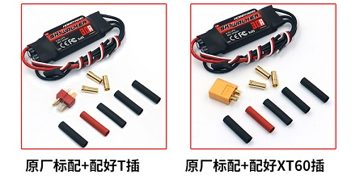
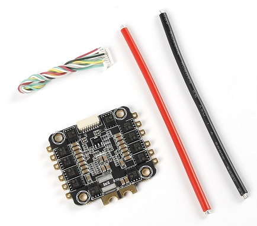
电机
电机分有刷电机和无刷电机
一般玩具四轴上面装的都是有刷电机，也叫空心杯。这种电机成本较低，但是功率也较低，由于磨擦导致能量转化效率也不高，磨擦生热导致电机寿命没有无刷好。
而穿越机以上的电机都是无刷电机。相对空心杯电机，有刷电机会贵很多，还需要额外加个电调驱动无刷电机转动。但是无刷电机的能量转换效率很高，而且力量非常强大。所以一般发烧友DIY的话都会选择无刷电机。
无刷电机的转子上粘有已充磁的永磁体，靠定子绕组上有规律的磁向变化来带动转子转动。一般多做成三相对称星形接法，引出三根动力线跟电调相连。
无刷电机的型号一般都有四位数字表示，比如2212、2018等。这其实是电机的尺寸，其中前面2位是电机转子的直径，后面2位是电机转子（不是外壳）的高度。简单来说，前面2位越大，电机越肥，后面2位越大，电机越高。 又高又肥的电机，功率就更大，适合做大四轴。 又矮又瘦的电机功率小点，适合做迷你四轴。
每个无刷电机都会标多少kv值，这个kv是外加1v电压对应的每分钟空转转速，例如：1000kv电机，外加1v电压，电机空转时每分钟转1000转，外加2v电压，电机空转就2000转了。
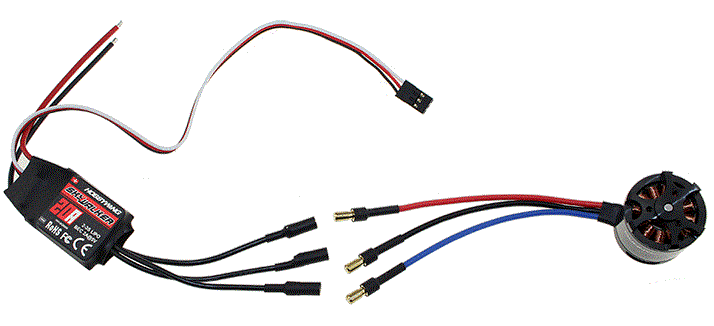
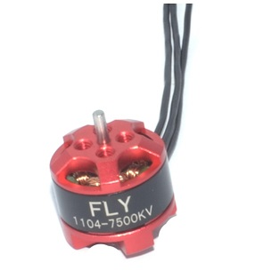 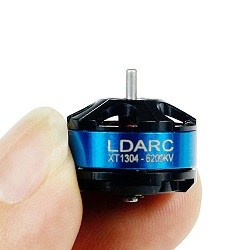
螺旋桨
浆，在生活中很常见。螺旋桨除了一叶的，几叶的都有。浆的叶片多不增加飞机的动力，但是能够改变飞机的爬升性能。
在四轴上最通用的是两叶浆。一般情况下大浆用两叶，小浆有可能会出现三叶、四叶。
浆的叶多少选择跟介质关系很大。空气密度小，浆叶片的增加对往后推的空气总量提升有限。而如果是船在密度较高的水中，增加一叶浆对整体往后推的水量就有很大的提升。所以一般飞机会用两叶浆，飞船会用三叶架。
四轴四个螺旋桨的旋转方向是不一样的，主要是为了相互抵消自旋，所以需要正反桨。适合顺时针旋转的叫正浆、适合逆时针旋转的是反浆。安装的时候要根据所需的四轴模式进行安装，切忌将正反桨装反了。
同电机类似，桨的型号也都用4位数字表示，比如1045、7040等。前面2位代表桨的直径（单位：英寸 1英寸= 0.0254米）后面2位是桨的角度。
一般来说，大浆需要更大的转动力量来提供升力，而小浆需要更快的转速来提供更大的升力。而相同攻略的电机kv值越小，转动力量就越大。所以在选型的时候打浆会配个低kv的电机，而小浆会配个高kv的电机。
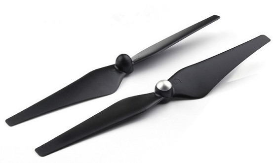 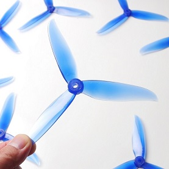
电池
四轴的的电池跟普通的电池最大的区别就是放电能力，因为四轴在飞行的过程中需要用很大的马力加速、转弯、翻转
由于放电电流很大，放电速度也会很快，所以电池的容量也是另外一个很重要的指标，容量越大，四轴能飞的越久。
另外还需要考虑的指标是输出电压是否符合内部元器件的要求，电池的体积是否能符合安装，电池的重量会不会太重。
一般买动力电池的时候都会标有 mAh、放电C、充电C以及V等这些数据。
- mAh表示电池容量，比如1000mAh的电池，如果以1000mA的电流放电，能持续放电1小时，如果以500mAh的电流放电，可以次序放电2小时
- 放电C代表电池放电能力，这是普通锂电池和动力锂电池最重要区别，动力锂电池需要很大电流放电，这个放电能力就是C来表示的。如1000mah电池 标准为5c，那么用5x1000mah，得出电池可以以5000mh的电流强度放电，但是放电时间也就缩小到1/5小时了。这很重要，如果用低c的电池，大电流放电，电池会迅速损坏，甚至自燃。
- 充电C代表电池的充电能力与上面的c一样，只是将放电变成了充电，如1000mah电池，2c快充，就代表可以用2000ma的电流来充电。所以千万不要图快冒然用大电流，超过规定参数充电，电池很容易损坏。
- V代表电池的输出电压，有时候也用S来表示。S代表锂电池的节数，锂电池1节标准电压为3.7v，那么2s电池，就是代表有2个3.7v电池在里面，电池的输出电压为7.4V。电压要根据外围器件的需求来进行选择。
在选择电池的时候要综合考虑各个因素，这与选择的电机、螺旋桨、想要的飞行时间相关，容量越大，c越高，s越多，电池越重。
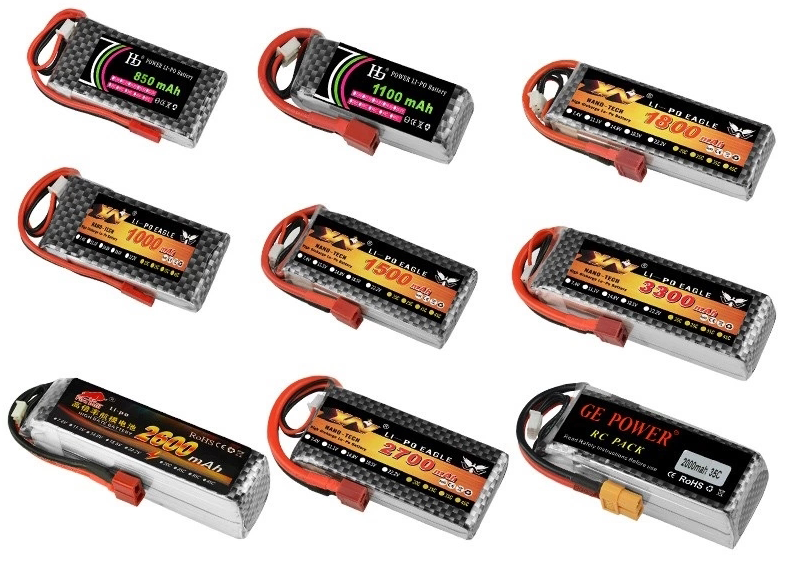
基本原则是如果用大桨，因为整体搭配下来功率高，自身升力大，为了保证可玩时间，可选高容量，高c，3s以上电池。如果用小浆，因为自身升力有限，整体功率也不高，就可以考虑小容量，小c，3s以下电池。
机架
作为整个飞机的支架，有两个很重要的因数需要考虑，一个是刚性，另外一个是重量。
刚性要强，这样四轴在很大的加速度下也不容易变形；重量要轻，每增减一份重量都会减少飞机续航时间同时降低飞机的灵活性。
综上，碳纤维是目前为止用来制作机架最好的材料，现在迷你四轴的话主流会选择3mm的碳纤维板来制作机架。
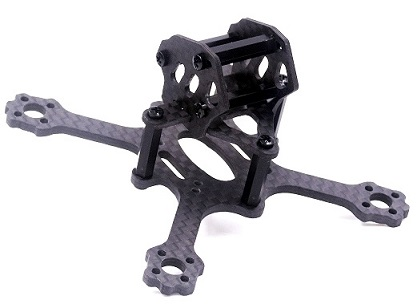 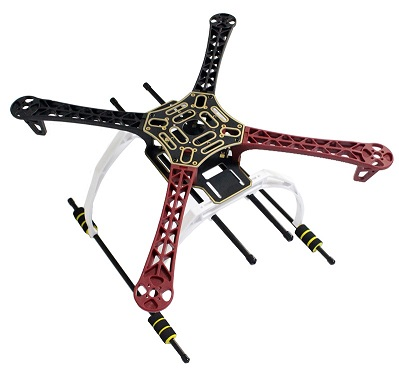 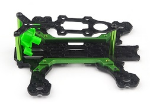
至于机架的尺寸，理论上讲，只要保证四轴上的4个螺旋桨不打架就可以了。但是考虑到螺旋桨之间因为旋转产生的乱流会互相影响，建议还是不要太近，否则影响效率。
以上就是四轴本体上的基本配件了，但是它暂时还不能飞，因为缺少给四轴发送飞行命令的设备，比如遥控器，或者地面站。下篇将会对这些外围配件进行介绍。

Comments
There are no comments yet.